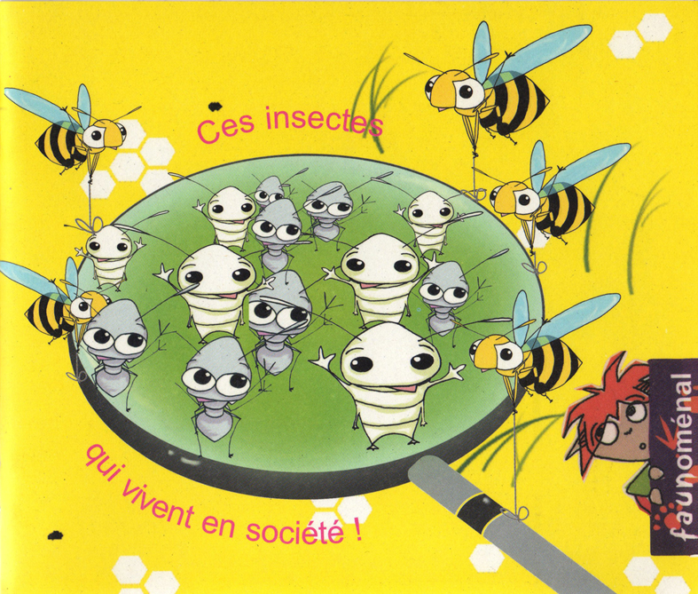
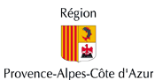

|
Livret pédagogique : "Ces insectes qui vivent en société" |
Collection : Faunoménal

Pour que nos enfants deviennent les garants de l'avenir de la forêt méditerranéenne
Avec ce second volet de la collection "Les carnets de Zita", l'Association pour le reboisement et la Protection du Cengle Sainte-Victoire et la jeune illustratrice Sarah Rivière souhaitent sensibiliser le jeune public (8-12 ans) à la forêt méditerranéenne.
Ainsi, Zita l'abeille et son nouveau compagnon Léon le bourdon, emmènent les enfants à la découverte de cette forêt si riche !
Ce livret pédagogique leur fera ainsi découvrir son histoire, sa flore, sa faune, sa géologie, ses rôles...
Des problèmes d'actualités comme la prévention des incendies sont également traités.
Bien entendu, un chapitre est consacré aux reboisements et à leurs différentes techniques.
Enfin l'interactivité est largement privilégiée grâce à des jeux et des expériences !
Cette réalisation a été récompenser dans le cadre de l'appel à projets scientifiques et techniques 2003 du Conseil Général 13 et de la Direction Régionale et Départementale Jeunesse et Sports. Il a également reçu le soutien financier du Conseil Régional PACA, de la ainsi que de la DIREN PACA,


DISPONIBLE A L'ARPCV - 4 € ( 3 € prix adhérent)
Commande possible au 04 42 23 18 54 ou par e-mail